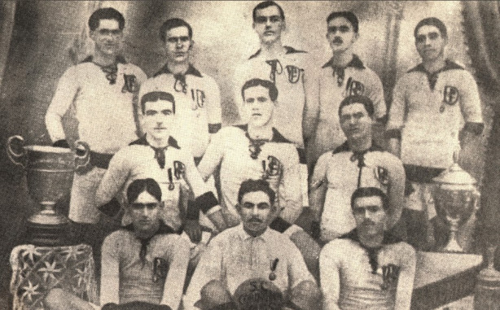

Momentos Históricos

Fundação do Clube (1910)
O Corinthians foi fundado em 1º de setembro de 1910 por um grupo de operários do bairro do Bom Retiro, inspirado por um time inglês chamado Corinthian FC. Desde o começo, o clube carregou o apelido de "Time do Povo".
Campeão Mundial de Clubes
O Corinthians foi o primeiro campeão mundial de clubes da FIFA, vencendo o Vasco nos pênaltis, com brilho de Dida e Edílson.
Gol de Ronaldo Fenômeno – Clássico contra o Palmeiras (2009)
Ronaldo voltava de lesão, fora do peso, desacreditado. Em seu terceiro jogo, ele entra no segundo tempo e marca um golaço com toque sutil e explosão da torcida. A comemoração no alambrado virou imagem clássica.